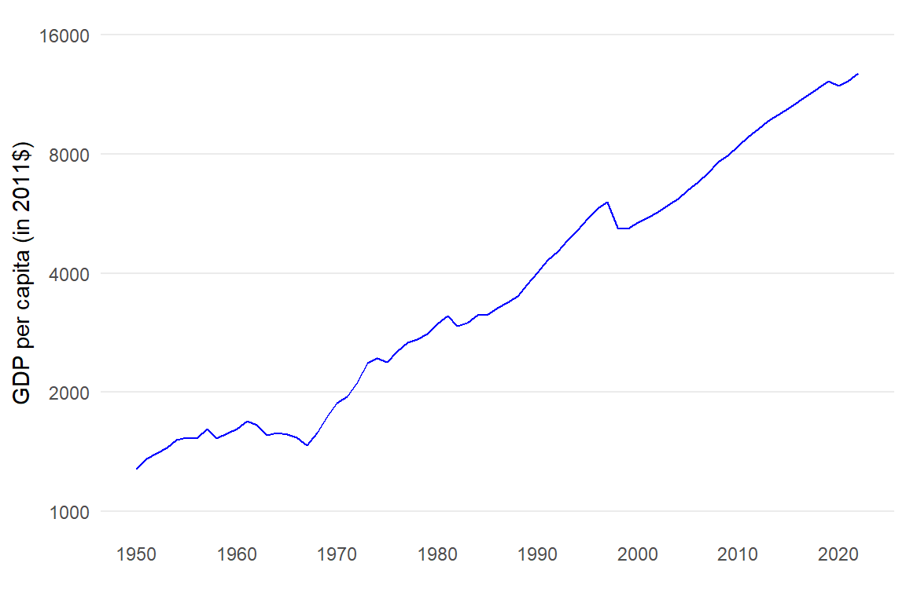

Chapter 1 Describing long-run growth trends
In this chapter, we will develop some useful tools to describe the long-run growth trends of macroeconomic variables and to think about the mechanisms behind these growth trajectories.
By the end of this chapter, you should be able to:
- Calculate growth rates.
- Understand the role of compounding effects in modern growth trends and beyond.
- Construct and interpret plots of logarithms and plots with logarithm (ratio) scales.
- Perform all these operations in Excel.
We will use data from the Maddison Project Database 2023 (Bolt, Jutta and van Zanden, Jan Luiten 2024) and the Penn World Table (Feenstra, Inklaar, and P.Timmer 2015), allowing us to compare real economic outcomes over time and across countries. Gross Domestic Product (GDP) in this chapter will always refer to real GDP.
1.1 Introduction
Figure 1.1: Long-run trends in GDP per capita: 1700-2022
Figure 1.1 represents the evolution of GDP per capita over more than three centuries in today’s largest economies, where we measure the size of an economy by their total GDP. This data tells us of a story of growing global wealth (or standards of living) and inequality:
- Modern growth is a relatively recent phenomenon: GDP per capita was relatively constant in all countries until the late 18th century. It then started to increase exponentially in all countries at some point over the last 200 years. In most countries, this led to GDP per capita being multiplied by a factor of 10 or more.
- The great divergence: this exponential growth pattern started at different times in different countries. As a result, the difference between the richest and the poorest countries in this sample has grown from a factor of 4 to 5 in 1800 to a factor of 10 to 11 in 2018. There is also nothing to suggest that the countries lagging behind will eventually catch up to the most advanced economies.
- A variety of experiences: in most countries, the path has not been entirely smooth. The Russian Federation, Japan or South Africa experienced decades of stagnation or decline in the last 50 years. Similarly, some of the poorest countries, not represented here, have seen little to no growth as well as periods of prolonged decline over the same period.
Growth rates and the dynamic performance of economies
The dynamics of GDP over the long term observed in Figure 1.1 are the result of growth processes that are cumulative over time. Each year, an economy has the potential to build on the previous level of production to generate more output, which would allow for further increases in output in the following year, etc… In this view, the growth rate of output from one year to the next is a useful indicator of the dynamic performance of an economy. Irrespective of the size of the economy, it can also be used to compare the economic performance of different countries over the same period or the performance of a single economy over different periods. Economic theories of growth seek to understand the mechanisms that drive these changes in output and growth over time and the reasons why they may differ across countries.
The power of compounding effects
Two comparisons shed some light on the relationships between growth rates and changes in the levels of GDP in the long-run.
Why do Americans have bigger fridges and cars than Britons?
Between 1885 and 2022, GDP per capita in the United Kingdom increased from $6,132 to $38,407. Standards of living have therefore been multiplied by more than 6 in this country over this period. In contrast, GDP per capita in the United States over the same period has increased from $6,424 to $58,487, a nine-fold increase in standards of living. Starting from a similar level as that of the United Kingdom, GDP per capita in the United States has therefore grown at a faster rate and is now about 50% higher. How much higher than that of the United Kingdom must have been the annual growth rate of GDP per capita in the United States to arrive at this outcome?
Why has GDP per capita in Nigeria not converge to that of the United Kingdom?
GDP per capita in Nigeria has increased from $810 to $5,070 between 1885 and 2022. Therefore in both the United Kingdom and Nigeria, standards of living have been multiplied by slightly more than 6 over this period. As we will see, this means that they have grown at the same average annual growth rate. As a result, the two countries have not diverged but they have not converged either; the United Kingdom was and remains a bit more than 7.5 times richer than Nigeria. For GDP per capita in Nigeria to have converged to that of the United Kingdom over this period, how much higher should its annual growth rate have been on average?
The answer to both questions is probably less than you would expect. Compounding effects explain why small differences in annual growth rates of GDP can have significant impacts on the levels of GDP in the long-run.
By the end of this chapter, you will be able to reformulate these problems in mathematical terms and solve for the precise answer. You will also be equipped to produce informative graphical representations of growth trajectories (using logarithms) and use these techniques to extract some relevant facts about growth in countries across the world and over time.
1.2 Growth rates
Most economic variables are observed at discrete time intervals. For example, to produce the plot in Figure 1.1, we used annual observations of GDP per capita (see Table 1.1). GDP is only observed at separate points in time. Time is discrete in the sense that it only takes on integer values, for example \(t=2000, 2001, ..., 2004\).
1.2.1 Definition
The growth rate of \(y\) is the percentage change in \(y\) between time \(t-1\) and time \(t\): \[g_t = \frac{\Delta y}{y} = \frac{y_t-y_{t-1}}{y_{t-1}} = \frac{y_t}{y_{t-1}}-1\] where \(\Delta y_t=\frac{\Delta y}{y}=y_t-y_{t-1}\) is the change in variable \(y\) between \(t-1\) and \(t\).
In percentage terms: \[\%g_t=\frac{y_t-y_{t-1}}{y_{t-1}} \times 100 \] In Economics, growth rates are usually expressed in annual terms unless specified otherwise.
Using the data in Table 1.1, the growth rate of GDP per capita in the United States between 2000 and 2001 is equal to: \[\% GDP_{2001}=\left(\frac{GDP_{2001}}{GDP_{2000}}-1\right) \times 100 = \left(\frac{45878}{45886}-1\right) \times 100 = -0.01743\%\] Note that a growth rate can be negative. In this case, it simply means that the average value of goods and services produced per person in the United States declined between 2000 and 2001. Column 3 of Table 1.1 shows the annual growth rate of US GDP per capita over the full sample period (rounded to 2 decimal points).
| Year (t) | GDP per capita (in $2011) | Growth rate (%) |
|---|---|---|
| 2000 | 45886 | NA |
| 2001 | 45878 | -0.02 |
| 2002 | 46266 | 0.85 |
| 2003 | 47158 | 1.93 |
| 2004 | 48493 | 2.83 |
| 2005 | 49655 | 2.40 |
| 2006 | 50490 | 1.68 |
| 2007 | 50902 | 0.82 |
| 2008 | 50276 | -1.23 |
| 2009 | 48453 | -3.63 |
| 2010 | 49267 | 1.68 |
| 2011 | 49675 | 0.83 |
| 2012 | 50436 | 1.53 |
| 2013 | 51011 | 1.14 |
| 2014 | 51797 | 1.54 |
| 2015 | 52808 | 1.95 |
| 2016 | 53301 | 0.93 |
| 2017 | 54152 | 1.60 |
| 2018 | 55455 | 2.41 |
| 2019 | 56469 | 1.83 |
| 2020 | 54379 | -3.70 |
| 2021 | 57523 | 5.78 |
| 2022 | 58487 | 1.68 |
| Source: Maddison Project Database 2023. |
1.2.2 Growth rates and logarithms
An alternative formula using logarithms provides a useful approximation to the growth rate. Unless otherwise state, “logarithm” will refer to the “natural logarithm” in the chapter.
Using the definition of the growth rate of variable \(y\), we have: \[g_t = \frac{y_t}{y_{t-1}}-1 \quad \leftrightarrow \quad 1+g_t = \frac{y_t}{y_{t-1}}\] Taking the logarithm on both sides and using the following property of logarithms \(\ln{\frac{a}{b}}= \ln{a}-\ln{b}\): \[\ln{(1+g_t)} = \ln{y_t} - \ln{y_{t-1}} \] For small values of \(g_t\), the approximation \(\ln{(1+g_t)} \approx g_t\) holds, leading to:
The growth rate of variable \(y\) is well approximated by the change in the logarithm of \(y\) (for small \(g\)): \[ g_t \approx \Delta\ln{y_t}\] where \(\Delta\ln{y_t}\) is the change in the logarithm of \(y\).
Expressed in percentage terms: \[ \%g_t \approx \Delta\ln{y_t} \times 100\] The equality would hold exactly if \(y\) were a continuous variable (see Appendix).
Going back to the numerical example in the previous section: \[\% GDP_{2001} = (\ln{GDP_{2001}} - \ln{GDP_{2000}}) \times 100 = (\ln{45878} - \ln{45886}) \times 100 = -0.01744\%\] which is very close to the value calculated in the previous section.
1.3 Average growth rates
The annual growth rates reported in Table 1.1 are mostly positive, suggesting that on average the economy grew on a consistent basis over the period observed. Can we summarise this growth experience over the long-run in a single number?
1.3.1 The trend growth path
Figure 1.2 represents actual GDP per capita in the United States between 1870 and 2018 (black solid line) and an estimate of the trend in GDP per capita over the same period (dashed red line). Actual GDP per capita fluctuates around the trend line but both appear to be growing on average at the same rate over time. This average growth rate provides a clearer summary of long-run trends than the annual growth rates presented in Table 1.1. It abstracts from short-run fluctuations, which can be very large as in the case of the Great Depression in the 1930s, while still capturing the trajectory of GDP per capita in the long-run.
Figure 1.2: GDP per capita in the United States: 1870-2023
How can we obtain an estimate of the annual growth rate of GDP per capita along this trend growth path? There are several valid methods to do so but there is at least one very incorrect one, which we discuss now.
We might be tempted to calculate the average annual growth rate as the percentage change in GDP per capita between 1870 ($4,803) and 2018 ($55,335) divided by the number of years in between (148): \[\bar{g} =\left(\frac{GDP_{2018}}{GDP_{1870}} -1 \right)\frac{1}{148}\times 100= \left(\frac{55,335}{4,803}-1 \right)\frac{1}{148}\times 100 = 7.11\%\] However, that would be wrong. Starting at $4,803 and assuming GDP per capita grows at an annual growth rate of 7.11% would lead to a level of GDP per capita 148 years later equal to $124,840,484, more than 2000 times the actual value of GDP per capita in 2018!
1.3.2 The compound growth rate
The compound annual growth rate provides an estimate of the average growth rate which avoids falling into the same trap. Intuitively, it is the constant growth rate such that if GDP per capita had grown at this same rate every year, then starting at $4,803 in 1870, GDP per capita 148 years later would be exactly equal to $55,335.
Assume that GDP per capita grows at the same rate \(\bar{g}\) every year.
Using the growth rate formula, \(\bar{g} = \frac{GDP_{1871}}{GDP_{1870}}-1\): \[GDP_{1871}=(1+\bar{g})GDP_{1870}\] and \[GDP_{1872}=(1+\bar{g})GDP_{1871}\]
Substituting the first expression into the second gives: \[GDP_{1872}=(1+\bar{g})(1+\bar{g})GDP_{1870}=(1+\bar{g})^{2}GDP_{1870}\] and \[GDP_{1873}=(1+\bar{g})GDP_{1872}=(1+\bar{g})(1+\bar{g})(1+\bar{g})GDP_{1870}=(1+\bar{g})^{3}GDP_{1870}\]
By repeated substitution: \[GDP_{2018}=(1+\bar{g})^{148}GDP_{1870}\]
Definition: Compound growth
Growth derived from growth achieved in previous periods.
Intuition: each year, the growth rate applies to the initial level of GDP as well as to the accumulated growth from previous years. In other words, each year’s growth generates further growth in subsequent years. Such compounding effects explain how an economy growing at a relatively small annual rate may nevertheless experience the exponential increase observed in Figures 1.1 and 1.2.
- Solving for \(\bar{g}\):
\[(1+\bar{g})^{148}=\frac{GDP_{2018}}{GDP_{1870}} \quad \rightarrow \quad 1+\bar{g} = \left(\frac{GDP_{2018}}{GDP_{1870}} \right)^{\frac{1}{148}}\] \[\bar{g}=\left(\frac{GDP_{2018}}{GDP_{1870}} \right)^{\frac{1}{148}}-1 =\left(\frac{55,335}{4,803} \right)^{\frac{1}{148}}-1=0.01665 \] or \(\bar{g} = 1.67\%\).
The reason why the incorrect method discussed above led to an incorrect estimate of the average growth rate is because it ignored the presence of these compounding effects, leading it to overestimate the trend annual growth rate.
Definition: Compound growth rate
Let \(y\) be any trending variable (GDP, population, …) following an exponential pattern over time, its initial value at time \(0\) be \(y_0\) and its trend growth rate be \(\bar{g}\).
\[ y_t = (1+\bar{g})^{t} y_0 \] Compound annual growth rate formula: \[ \bar{g} = \left(\frac{y_t}{y_0}\right)^{\frac{1}{t}} - 1 \]
See Appendix 2 for derivation of results in this section.
1.3.3 The logarithm approximation
As for the growth rate, there exists an approximation of this formula, which makes use of logarithms:
- Taking the logarithm on both sides and using the following properties of logarithms \(\ln{\frac{a}{b}}= \ln{a}-\ln{b}\) and \(\ln{a^b} = b\ln{a}\): \[\ln{(1+\bar{g})} = \frac{1}{t}(\ln{y_t} - \ln{y_{0}}) \]
- For small values of \(g_t\), the approximation \(\ln{(1+\bar{g})} \approx \bar{g}\) holds, leading to:
\[ \bar{g} \approx \frac{1}{t}(\ln{y_t} - \ln{y_{0}})\]
Applying this formula to the previous example: \[ \bar{g} \approx \frac{1}{148}(\ln{GDP_{2018}} - \ln{GDP_{1870}}) = \frac{1}{148}(\ln{55,335} - \ln{4,803}) = 0.01651 \] or \(\bar{g} = 1.65\%\), which close to the average growth rate calculated in the previous section, but not quite.
1.3.4 A note of caution
It is easy to compute the average growth rate over any given interval of time by just plugging in values into the compound annual growth rate formula. But the compound growth rate may be misleading or uninformative as a summary statistic of long-run trends when the growth rate fluctuates widely over time. There may be decades where the growth rate is small (and even negative), followed or preceded by decades where the growth rate is high. It is important to do a preliminary inspection of the data to check that you are fitting the appropriate model to your data.
For example, GDP per capita in Haiti has experienced wide swings between 1945 and 2023 as illustrated in Figure 1.3, with decades of growth (1965-1980, 1995-2015) followed by decades of decline (1955-1965, 1980-1995). The full sample period average growth rate would be relatively uninformative about this economy’s growth dynamics.
Figure 1.3: GDP per capita in Haiti: 1945-2023
1.4 Logarithm plots and ratio scales
Plots of GDP on a logarithmic or ratio scale feature frequently in the economic press. A few examples can be found here and here. In this section, we explain why these plots are useful representations of GDP trends and how to interpret them.
1.4.1 Logarithm plots
We saw that the change in the logarithm of a variable provides a good approximation to the growth rate of this variable provided it is small enough. This suggests that growth rates can be read off the plot of the logarithm of a variable \(y\) against time, where the slope at any point in time is the change in the logarithm of \(y\) (\(\Delta\ln{y_t}\)).
The left panel of Figure 1.4 plots a variable \(y\) which grows over time at a constant growth rate \(g\) according to the following function: \(y_t = (1+g)^t y_0\). We set \(y_0=1\) and \(g=0.05\), so \(y\) grows at the rate of 5% in each period starting at an initial value of 1.
Figure 1.4: Plots of a variable growing at a constant rate
The right panel of Figure 1.4 plots the natural logarithm of \(y\) allowing us to see immediately that \(y\) grows at a constant rate (the straight line has constant slope). This follows from the fact that the logarithm of \(y\) is a linear function of time: \[y_t = (1+g)^t y_0 \quad \rightarrow \quad \ln{y_t}=\ln{(1+g)}\times t+\ln{y_0} \quad \rightarrow \quad \ln{y_t} \approx g\times t+\ln{y_0}\] using \(\ln{(1+g)} \approx g\).
It is easy to verify that the slope of the logarithm plot (\(\Delta\ln{y}/\Delta t = \Delta\ln{y}/1\)) is equal to 0.05, the growth rate of \(y\).
Figure 1.5: Plots of three variables growing at a constant rate
Figure 1.5 plots \(y\) and its logarithm for three different value of the constant growth rate \(g\). The exponential gap in the path of the three series illustrates the compounding effect of growth. A small difference in growth rates can generate large differences in the level of variables in the long-run.
Example: GDP per capita in the United States (1870-2023)
Going back to US real GDP per capita, we already noticed the exponential pattern of GDP per capita over the last two centuries. Focusing on the period 1870-2018, we can now check graphically whether the US economy grew at a relatively constant average growth rate over this period. If the growth rate is constant over time we would expect the plot of its logarithm to be well approximated by a straight line.
Figure 1.6: (Level and logarithm of) GDP per capita in the United States: 1870-2023
The middle panel in Figure 1.6 represents the logarithm of US real GDP per capita. Although not perfect, the plot does appear to be approximately linear, suggesting a relatively constant growth rate over the long-run. This hypothesis can be further evaluated by fitting a line of best fit (in blue) to the plot of the logarithm (right panel) and checking how well the line fits the data. The estimate of the slope of the line of best fit is 0.0167, which corresponds to a growth rate of 1.67% per year and is similar to the compound growth rate calculated in the previous section.
1.4.2 Logarithmic (ratio) scales
We have seen how the slope of the plot of the logarithm of the trending variable \(y\) allows us to evaluate quickly the growth rate of \(y\). We now turn to what it means to plot the logarithm of a variable, ie to represent a variable on a logarithmic (or ratio) scale.
The left and middle panels of Figure 1.7 represent the same variable \(y\) growing at a rate of 5% per period and its natural logarithm \(\ln{y}\) once again. The natural logarithm of \(y\), is the number of times Euler’s number \(e=2.72...\) needs to be multiplied by itself in order to obtain \(y\). The plots shows that when \(y\) is equal to 150, its natural logarithm is approximately equal to 5. So 5 is the natural logarithm of 150, or the number of times \(e\) needs to be multiplied by itself to obtain the number 150 (to be exact, 5 is the natural logarithm of \(e^5=148.4132\)).
Figure 1.7: Representing variables on a logarithmic scale
This gives us an alternative interpretation of the logarithm plot: every tick mark on the vertical axis, y is multiplied by \(e\). So when at time \(t=40\) we read off the plot that \(lny=2\), this means that \(y\) is approximately equal to \(e^2=7.389\). Similarly, \(lny=3\) at time \(t=60\) means that \(y\) is approximately equal to \(e^3=20.086\). This is the intuition behind the logarithmic scale (also called log scale or ratio scale) represented on the right panel, which is constructed by relabeling the value of the natural logarithm of \(lny\) on the vertical axis with the corresponding value of \(y\).
Changing the base number of the logarithm allows us to set more intuitive multiplying factors. For example, the logarithm base 2 of \(y\), represents the number of times the number 2 needs to be multiplied by itself to obtain \(y\). So on a plot of the logarithm base 2 of \(y\) (right panel of Figure 1.8), every tick mark on the vertical axis, y is multiplied by 2. This plot can be used to read graphically on the horizontal axis how long it takes for variable \(y\) to double.
Figure 1.8: Representing variables on a logarithmic scale (base 2)
We can see that it takes slightly less than fifteen periods for \(y\), which is still growing at the rate of 5% per period, to double. So it would take slightly less than fifteen years for the GDP per capita of an economy that is growing at the rate of 5% per year to double. This may seem surprising but is a direct consequence of the compounding effects discussed before.
Note: if the variable grows at a constant rate, the slope of the plot of of the logarithm base 2 (different from the natural logarithm) is constant, but it is not equal to the growth.
1.4.3 Rule of 70
Assuming a variable \(y\) grows at a comppund average growth rate \(g\), how many years \(t\) does it take for it to double in value? We just saw how plotting a variable using a log scale allows us to see immediately how long it would take for a variable to double (or triple, quadruple, etc…). It is also possible to address this question numerically using a useful result known as the rule of 70.
Rule of 70: if a variable \(y\) grows at the rate of \(\%g\) per period, then it takes approximately \(t \approx \frac{70}{\%g}\) periods for the value of \(y\) to double.
Proof: let \(y_t\) be such that it is twice the initial income per capita level \(y_0\) and \(t\) be the number of periods it takes for income per capita to double. Using \(y_t = (1+g)^{t} y_0\): \[y_t = (1+g)^ty_0 = 2 \times y_0 \quad \rightarrow 2 = (1+g)^t \] Taking logs on both sides: \[ \ln{2} = t \times \ln{(1+g)}\] Using the fact that \(\ln{2} \approx 0.7\) and \(\ln{(1+g)} \approx g\) (for small values of g): \[t = \frac{\ln{2}}{\ln{(1+g)}} \approx \frac{0.7}{g} = \frac{70}{\%g}\]
So when \(y\) grows at rate \(g=0.05\) in each period as in our example, the formula predicts that it would take approximately \(\frac{70}{5}=14\) periods for it to double, in line with what we observed in Figure 1.8.
Example: GDP per capita in the United States (1870-2022)
Figure 1.9: GDP per capita in the United States (in 2011$): normal and logarithmic scale
Figure 1.9 illustrates how this tool can be used to analyse the behaviour of GDP per capita over time. The right panel shows that it took slightly more than 35 years for GDP per capita to double in the United States, consistent with the prediction of the rule of 70 that when GDP per capita is growing at the trend rate of 1.67%, it will take about 42 years to double.
1.5 Growth in the United Kingdom and the United States
Figure 1.10: GDP per capita in the United States and United Kingdom: 1800-2022
Figure 1.10 suggests that on average GDP per capita in the United States grew faster than in the United Kingdom over the last 200 years. However, some questions are less easily answered just by looking at this plot. First, was the growth rate of GDP per capita in the United States and the United Kingdom constant over time or were there periods of faster (slower) growth? Second, was GDP per capita in the United States always growing at a faster rate than in the United Kingdom over these two centuries or only during specific periods?
We can address these questions using the techniques developed in the previous sections. Figure 1.11 plots the logarithm of GDP per capita for both countries and can be used to identify subperiods. Table 1.2 presents estimates of the trend growth rates of GDP per capita for both the United States and the United Kingdom for the full sample period and four subperiods.
Figure 1.11: United States vs United Kingdom: GDP per capita (1800-2022)
| Period | United states | United Kingdom |
|---|---|---|
| 1800-2022 | 1.42 | 1.11 |
| 1800-1830 | 0.59 | 0.20 |
| 1830-1946 | 1.38 | 0.96 |
| 1946-2022 | 1.82 | 1.69 |
| Source: Maddison Project Database 2023. Compound average annual growth rates (%). |
Did the two economies grow at a constant rate over the last two centuries or were there periods of faster or slower growth?
Growth accelerated in both countries after 1830. Although the United States grew at a relatively constant rate between 1830 and 2022 (between 1.4% and 1.8%), the growth experience of the United Kingdom is relatively more uneven. Its GDP per capita grew significantly faster on average in the second part of the 20th century (1.7%) compared to the previous period (1%).
Can we identify periods when GDP per capita in the United States grew at a substantially faster rate than that of the United Kingdom?
GDP per capita grew at relatively similar rates in the two countries between 1946 and 2022, which can be seen both in the log plot and the estimated average gowth rates. However, between 1830 and 1946, GDP per capita grew at a substantially higher average growth rate in the United States, which is the period when US GDP per capita overtook UK GDP per capita. In this period, the average growth rate of GDP per capita in the United States is 0.4 percentage point higher than that of the United Kingdom between 1830 and 1946. This relatively small difference on an annual basis explains why, by the end of this period, US GDP per capita was almost 50% higher than that of the UK, having started at a lower level (See Figure 1.10).
Summary
- The growth rate of variable \(y\) is defined as the percentage change of \(y\) between any two consecutive periods \(t-1\) and \(t\): \[\%g_t=\frac{y_t-y_{t-1}}{y_{t-1}} \times 100 \]
- When a variable follows an exponential growth pattern, the compound annual growth rate provides a useful measure of the average growth rate over an interval of time. It is calculated as: \[ \bar{g} = \left(\frac{y_t}{y_0}\right)^{\frac{1}{t}} - 1 \] where \(\bar{g}\) is the average growth rate and \(y_0\) is the initial value of \(y\).
- Compounding effect of growth: growth in each period derives from growth achieved in the previous period. This explains why relatively small differences in annual growth rates between countries may lead to large differences in the level of macroeconomic variables in the long-run.
- Two useful approximations (provided growth rates are small) of these growth rates are based on transformations using logarithms: \(g_t \approx \ln{y_t}-\ln{y_{t-1}}\) and \(\bar{g} \approx \frac{1}{t}(\ln{y_t}-\ln{y_0})\)
- Plots of logarithms are particularly well suited to describe growth trends:
- The slope of the plot of the logarithm of a variable provides a good approximation of the growth rate of this series at any point in time.
- The plot of the logarithm of a variable represents how many times this variable is multiplied by a given factor (\(e\) in the case of the natural logarithm) over a certain interval of time.
- The rule of 70 states states that it takes approximately \(70 / \%g\) periods for a variable growing at rate \(\%g\) to double.
Key terms
- Growth rate
- Compound annual growth rate
- Exponential growth
- Logarithmic (or log or ratio) scale
- Rule of 70
1.6 Questions
Question 1
The annual growth rate of real GDP per worker in the UK was 0.18% in 2019 (Source: PWT). What is this growth rate in fractional term?
- 0.18
- 0.018
- 0.0018
- 18
Question 2
The growth rate of GDP per capita in 2019 in Haiti was -0.02165 (Source: PWT). What is this growth rate in percentage?
- -0.02165%
- -0.22%
- -2.2%
- 0%
Question 3
The table above presents GDP per worker in China (Source: PWT).
| Year | GDP per worker (in 2017$) |
|---|---|
| 2018 | 24823.13 |
| 2019 | 25754.14 |
What is the growth rate of GDP per Worker in China in 2019?
- 0.04%
- 1.04%
- 3.75%
- 1.04
Question 4
Assume GDP per capita grows by 10% every year and that it starts at an initial level of $1000. By which percentage will GDP per capita have increased after 10 years?
- 10%
- 100%
- 171%
- 159%
Question 5
Assume population grows at the rate of 5% every year and the initial population is 100,000. By how many people total population will increase at the end of the first, second and third year respectively?
- 5000, 5000, 5000
- 5000, 5250, 5512
- 500, 500, 500
- 5000, 4750, 4488
Question 6
Source: Maddison Project Database 2023
The figure above represents GDP per capita in Indonesia. Based on the information in the plot above (move the cursor over the line to read actual numbers) the average (annual) growth rate in GDP per capita in Indonesia between 1950 and 2018 was:
- 12%
- 3.32%
- 3.27%
- 8.26%
Question 7
Source: Maddison Project Database 2023
The figure above represents the logarithm of GDP per capita in Indonesia between 1950 and 2019 (move the cursor over the line to read actual numbers).
- Divide the sample period into three subperiods based on what happened to the growth rate of GDP per capita.
- In which period did GDP per capita grow the fastest?
- In which period did GDP per capita in Indonesia grow at the slowest pace?
Question 8
 Source: Maddison Project Database 2023
The figure above represents GDP per capita in Indonesia on a ratio scale.
- Based on this figure, how many years did it take approximately for GDP per capita to double in Indonesia over this period?
- Using your answer in a., provide an approximation for the average annual growth rate using the rule of 70.
Question 9
The rule of 70 gives the number of years it would take for a variable to double given their annual growth rate. But we could derive similar formulas to calculate the number of years it would take for a variable to triple, quadruple, …, given their average annual growth rate.
Derive an expression for the number of years it would take for a variable to be multiplied by 6 given an annual growth rate \(\%g\). Hint: use the following approximation \(\ln{(1+g)} \approx g\) (for small g).
In the introduction we saw that GDP per capita in the UK and Nigeria have been multiplied by about 6 between 1885 and 2022. Using the expression derived in a., find an estimate of the average annual growth rate in the two countries over this period.
Appendix 1: Continuous time notation
Discrete versus continuous time change
In this chapter, we have not made much use of the continuous time notation, preferring to describe the behaviour of variables in discrete time. This reflects the fact that most macroeconomic variables are observed in discrete time.
In the discrete time perspective, variables remain unchanged during the interval between two time periods. In the continuous time perspective, variables remain unchanged for an infinitesimally short amount of time. This leads to different ways of expressing the change in these variables. For a more precise definition of these two concepts see here.
The continuous time change in variable \(y\) at \(t\) is the instantaneous change in \(y\) at time \(t\). It is defined as the change in variable \(y\) between two time periods as the interval of time between these two time periods tends to 0. In other terms, it is the derivative of the variable \(y\) with respect to time, denoted \(\dot{y}_t\) and defined as: \[\lim_{\Delta t \rightarrow 0}=\frac{y_t-y_{t-\Delta t}}{\Delta t}=\frac{dy}{dt}=\dot{y}_t\] In this course, we will formulate economic models using the discrete time notation. The continuous time notation presents analytical advantages and for this reason is often employed in growth models and in textbooks.
Continuous time growth rate
The continuous time counterpart to the growth rate formula described above is the instantaneous growth rate or proportional change. The instantaneous growth rate of variable \(x\) at time \(t\) is calculated as the ratio of the instantaneous change in \(x\) and its initial value: \[g_{t}=\frac{\dot{x}_t}{x_t} \]
Compounding growth rate
Assume a variable \(y\) (GDP, population, …) has initial value \(y_0\) and grows at the constant rate \(g\). Continuous compounding corresponds to the case where the frequency of compounding (\(n\) times a year) becomes infinitely large. Assuming continuous compounding, after \(t\) periods its value is equal to: \[ y_t = \lim_{n\rightarrow \infty} \left(1+\frac{g}{n}\right)^{nt} = e^{gt} y_0\] where \(e = 271828...\) is Euler’s number.
By taking the logarithm of this expression and rearranging, we obtain the following formula for the constant continuous time trend growth rate: \[ g = \frac{1}{t}\times(\ln{y_t}-\ln{y_0})\] Growth rate and logarithm
Assume a variable \(y\) has initial value \(y_0\) and grows at the continuously compounded constant rate \(g\), ie it follows this process: \(y_t = e^{gt} y_0\). Taking the natural logarithm of both sides of the continuous compounding expression and using the rules of logarithms: \[\ln{y_t}=\ln{e^{gt}}+\ln{y_0}=g\times t + \ln{y_0} = C + g \times t\] Where \(C=\ln{y_0}\) (constant).
This expression tells us that the logarithm of variable \(y\) can be expressed as a linear function of time \(t\). This implies that if a variable is growing at a constant rate, then the plot of its logarithm against time is a straight line. Moreover, the slope of this plot represents the (continuous time) growth rate of this variable.